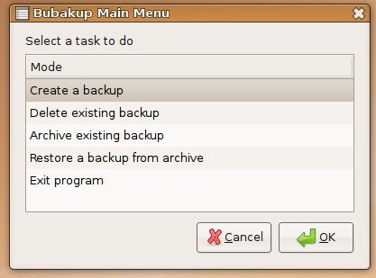

Bubakup
Archivierte Anleitung
Dieser Artikel wurde archiviert, da er - oder Teile daraus - nur noch unter einer älteren Ubuntu-Version nutzbar ist. Diese Anleitung wird vom Wiki-Team weder auf Richtigkeit überprüft noch anderweitig gepflegt. Zusätzlich wurde der Artikel für weitere Änderungen gesperrt.
Zum Verständnis dieses Artikels sind folgende Seiten hilfreich:
Bubakup  (Abkürzung für "Bootable Ubuntu Backup") ist ein Werkzeug, das es einem ermöglicht, bootbare Datensicherungen eines Live- oder des installierten Systems (wahlweise auch nur Teile davon) zu erstellen und diese dann mittels GRUB zu starten. Die Datensicherungen können als Notfall- und Wiederherstellungssystem oder als Testumgebung etwa für Unstable-Versionen genutzt werden. Bubakup besitzt außerdem eine Archivierungsfunktion für die Sicherungen.
(Abkürzung für "Bootable Ubuntu Backup") ist ein Werkzeug, das es einem ermöglicht, bootbare Datensicherungen eines Live- oder des installierten Systems (wahlweise auch nur Teile davon) zu erstellen und diese dann mittels GRUB zu starten. Die Datensicherungen können als Notfall- und Wiederherstellungssystem oder als Testumgebung etwa für Unstable-Versionen genutzt werden. Bubakup besitzt außerdem eine Archivierungsfunktion für die Sicherungen.
Hinweis:
Bubakup wird nicht mehr weiterentwickelt, die letzte aktuelle Version ist für Ubuntu 7.04. Eine Alternative ist Remastersys.
Installation¶
Fremdpaket¶
Das benötigte Installationspaket bubakup_61_all.deb  kann über SourceForge heruntergeladen und manuell installiert werden[1].
kann über SourceForge heruntergeladen und manuell installiert werden[1].
Hinweis!
Fremdpakete können das System gefährden.
Anmerkung: Falls das Paket grub-pc (= GRUB 2; ab Ubuntu 9.10 Standard) installiert ist, wird dieses durch den Installer von Bubakup entfernt und durch GRUB (= GRUB-Legacy) ersetzt.
Verwendung¶
Nach der Installation findet man Bubakup im GNOME-Menü unter
"Anwendungen -> Systemwerkzeuge -> Bubakup".
Das Programm bietet folgende Möglichkeiten: 
Eine Sicherung erstellen¶
Nachdem man "Create a backup" ausgewählt hat, gibt man im nächsten Dialog die Partition an, auf welche die Sicherung geschrieben werden soll. Die Auswahl wird mit "OK" bestätigt. Bubakup berechnet, wie viel Speicherplatz die Sicherung des Systems benötigen wird.
Anschließend bietet es die Möglichkeit, Ordnerverzeichnisse von der Sicherung auszuschließen. Mit "Exclude more directories" kann man die nicht benötigten Verzeichnisse auswählen. Sobald man alle Verzeichnisse, die nicht in der Sicherung enthalten sein sollen, ausgeschlossen hat, geht es mit "Continue On" weiter.
Nun muss man angeben, wie viel Speicherplatz der Sicherung insgesamt zur Verfügung stehen soll. Wenn diese als reine Sicherung gedacht ist, reicht der zuvor ausgerechnete Mindestwert. Plant man jedoch aus der Sicherung ein System zum Probeinstallieren bzw. Testen zu machen, oder noch weitere Dateien darauf abzulegen, sollte man mehr Speicherplatz zur Verfügung stellen. Sobald man mit "OK" bestätigt, beginnt der Sicherungsprozess.
Hinweis:
Der Prozess kann abhängig von der zu sichernden Datenmenge und der Geschwindigkeit der Festplatte sehr lange (über 1 Std.) dauern.
Sobald der Vorgang erfolgreich abgeschlossen wurde, kann man im GRUB-Menü die entsprechende Sicherung starten.
Eine existierende Sicherung archivieren¶
Bubakup bietet die Möglichkeit, Sicherungen zu archivieren. Diese werden dann mit 7-zip komprimiert und können an einem beliebigen Ort abgespeichert werden.
Hinweis:
Eine archivierte Sicherung kann nicht gebootet werden. Diese Funktion ist daher vor allem für ältere Sicherungen gedacht, die derzeit nicht benötigt werden.
Um eine Sicherung zu archivieren, muss man Bubakup starten (vom Hauptsystem, nicht von der Sicherung aus) und die Option "Archive existing backup" auswählen. Im erscheinenden Dialog muss man angeben, auf welcher Partition sich die zu archivierende Sicherung befindet. Nun wählt man die entsprechende Sicherung aus der Liste aus und legt fest, wohin die Sicherung archiviert werden soll.
Nun wird man aufgefordert, den Kompressionsgrad für das Archiv anzugeben. Je höher die Zahl ( 1 - 9 ), desto kleiner wird die Archivdatei werden, allerdings erhöht sich die Kompressionsdauer bei stärkerer Kompression teils erheblich. Nach Bestätigung mit "OK" beginnt das Archivieren.
Sicherungen löschen¶
Um eine existierende (und aktive) Sicherung zu löschen, sind die folgenden Schritte notwendig: Zuerst wählt man die Option "Delete existing backup", dann die Partition, auf der die Sicherung gespeichert ist, aus und markiert dort die Sicherung. Die Sicherung wird daraufhin gelöscht und der GRUB-Booteintrag entfernt.
- Erstellt mit Inyoka
-
 2004 – 2017 ubuntuusers.de • Einige Rechte vorbehalten
2004 – 2017 ubuntuusers.de • Einige Rechte vorbehalten
Lizenz • Kontakt • Datenschutz • Impressum • Serverstatus -
Serverhousing gespendet von